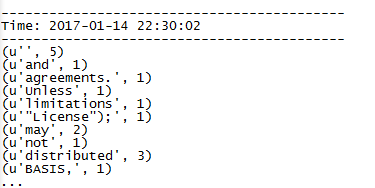

公司是想通过类似MySQL->Yelp->Kafka->Spark Streaming->OpenTSDB的结构搭一套框架,然后一步一步来吧
每个部分单独实现接口肯定是没问题的,无非就是Java/Python/WebAPI或者其他接口封装一下,问题是怎么用最简单的方法把这一套串起来
啃文档啃文档啃文档…
linux/java/maven/python/english每一项都是弱项,结果对文档的理解进度很慢…
花了三四天才用官方的example把kafka的数据直接接入了spark streaming
最近看的东西也是太多太散,本身自己其实只是根据文档做了个测试,命令都还记不住…整理一下吧
下载安装
官方网站下载最新的Pre-build版本，解压就可以直接跑了
下载页面
源代码编译
这就不得不看一下maven的问题了
maven根据配置自动下依赖包的功能是很方便，然而GFW面前都是浮云，百度之后找到了淘宝镜像站
修改settings.xml文件中的镜像配置即可1
2
3
4
5
6
7
8<mirrors>
<mirror>
<id>alimaven</id>
<name>aliyun maven</name>
<url>http://maven.aliyun.com/nexus/content/groups/public/</url>
<mirrorOf>central</mirrorOf>
</mirror>
</mirrors>
编译命令
网上搜下来有两种，第一种是./build/mvn1
build/mvn -Pyarn -Phadoop-2.7 -Dhadoop.version=2.7.0 -DskipTests clean package
然后一种是用脚本把编译后的项目打包出来
第一种做法看不懂怎么用,还是太多东西不懂,先用起来……所以这里采用第二种
1 | ./make-distribution.sh --tgz --name 2.7.0 -Pyarn -Phadoop-2.7 -Phive |
先编了一次,提示有错误,生成文件spark-[WARNING] The requested profile "hive" could not be activated because it does not exist.-bin-2.7.0.tgz,大概是hive没有安装?参数去掉再编一次,生成成功
然后根据官方的LinkSection和自己的需要添加dependency,编译完成之后相关的依赖包也会打在生成的文件里面.
因为公司是要把kafka的数据直接接到spark streaming里面,这里我添加了kafka的依赖,其实后来想想自己到Maven repository上面手动搜包下载就好了…在这里浪费了很长时间
数据接入例子
简单说一下我这次是怎么做的
Kafka
启动Kafka服务1
nohup bin/kafka-server-start.sh config/server.properties &
新建名为test的topic1
bin/kafka-topics.sh --create --zookeeper localhost:2181 --replication-factor 1 --partitions 1 --topic test
启动kafka producer1
bin/kafka-console-producer.sh --broker-t localhost:9092 --topic test
到这里kafka这边基本都好了
启动Spark Streaming程序
首先把需要用到的kafka包拷到Spark的路径下,然后找到官方的direct_kafka_wordcount.py文件,或者直接自己写一个1
2
3
4
5
6
7
8
9
10
11
12
13
14
15
16
17
18
19
20
21
22
23
24
25
26
27
28
29
30
31
32
33
34
35
36
37
38
39
40
41
42
43
44
45
46
47
48
49
50
51
52
53
54
55
56#
# Licensed to the Apache Software Foundation (ASF) under one or more
# contributor license agreements. See the NOTICE file distributed with
# this work for additional information regarding copyright ownership.
# The ASF licenses this file to You under the Apache License, Version 2.0
# (the "License"); you may not use this file except in compliance with
# the License. You may obtain a copy of the License at
#
# http://www.apache.org/licenses/LICENSE-2.0
#
# Unless required by applicable law or agreed to in writing, software
# distributed under the License is distributed on an "AS IS" BASIS,
# WITHOUT WARRANTIES OR CONDITIONS OF ANY KIND, either express or implied.
# See the License for the specific language governing permissions and
# limitations under the License.
#
"""
Counts words in UTF8 encoded, '\n' delimited text directly received from Kafka in every 2 seconds.
Usage: direct_kafka_wordcount.py <broker_list> <topic>
To run this on your local machine, you need to setup Kafka and create a producer first, see
http://kafka.apache.org/documentation.html#quickstart
and then run the example
`$ bin/spark-submit --jars \
external/kafka-assembly/target/scala-*/spark-streaming-kafka-assembly-*.jar \
examples/src/main/python/streaming/direct_kafka_wordcount.py \
localhost:9092 test`
"""
from __future__ import print_function
import sys
from pyspark import SparkContext
from pyspark.streaming import StreamingContext
from pyspark.streaming.kafka import KafkaUtils
if __name__ == "__main__":
if len(sys.argv) != 3:
print("Usage: direct_kafka_wordcount.py <broker_list> <topic>", file=sys.stderr)
exit(-1)
sc = SparkContext(appName="PythonStreamingDirectKafkaWordCount")
ssc = StreamingContext(sc, 2)
brokers, topic = sys.argv[1:]
kvs = KafkaUtils.createDirectStream(ssc, [topic], {"metadata.broker.list": brokers})
lines = kvs.map(lambda x: x[1])
counts = lines.flatMap(lambda line: line.split(" ")) \
.map(lambda word: (word, 1)) \
.reduceByKey(lambda a, b: a+b)
counts.pprint()
ssc.start()
ssc.awaitTermination()
然后就是执行下列命令1
bin/spark-submit --jars ./external/kafka-0-8-assembly/target/spark-streaming-kafka-0-8-assembly_2.11-2.1.0.jar direct_kafka_wordcount.py 192.168.0.106:9092 test
这句很长,要确保引用的jar包路径正确无误,然后就是python代码文件路径正确,命令结构大概是spark-submit --jars jarSource codeSource host:port topic这样
跑起来没有自动退出,就说明是命令正确可以被执行了,但是这里默认会输出大量的INFO日志,先修改一下日志的配置为WARN
切换到conf目录1
2cp log4j.properties.template log4j.properties
vim log4j.properties #修改配置,重启服务即可
重新执行,应该是像这样
程序这就算是跑起来了,在生产者里面输入的数据会进入spark streaming进行处理,显示结果大概是这样
输入
输出
